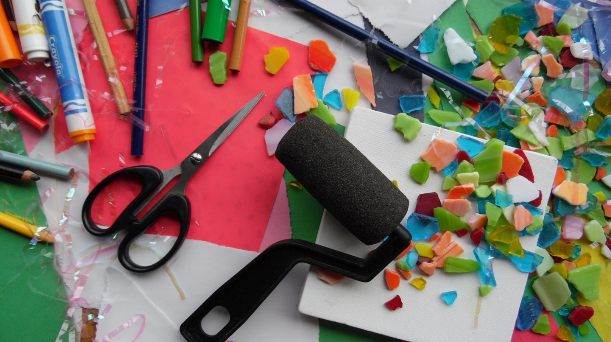

Student Life
The Impact of Having Hobbies
By Lily Nordgren | Published Apr 29, 2021 4:22 p.m. PST

What is the difference between a hobby and a job? Or a hobby and school? A hobby adds enjoyment and fun to life, along with personal and social growth. It is something one can do for themselves. Time spent actively enjoying oneself is difficult to plan nowadays. Social media and the Internet direct us to be aware of everything and everyone, all at once, and many students are feeling the pressure of productivity. Hobbies have huge benefits for physical and mental health. Beyond the benefits, having fun is one of the simplest necessities of life.
According to Psychology Today’s article “Six Reasons to Get a Hobby” (https://www.psychologytoday.com/ca/blog/happy-trails/201509/six-reasons-get-hobby), we are not always as busy as we think. This varies from person to person depending on commitments and responsibilities, but many people fall back on passive activities to relax (scrolling on social media, watching TV) rather than active activities. This is fine in small doses, but too much passive entertainment can be detrimental to your mental health and fulfillment. Active hobbies like sports, clubs, or creative outlets can increase your self-confidence and release energy. Devoting time and attention to hobbies can indirectly add to your work or education. Learning a fun skill engages you in other aspects of life, because you have an outlet for stress and stagnancy. For example, learning how to roller skate could give you a sense of coordination and confidence in your direction. Learning to knit could improve your understanding of patterns, and acceptance of imperfection. Running can allow your body to practice the flight response if you are stressed or anxious, and strengthens your persistence.
An article by Neuroscience News, “The Science Behind Why Hobbies Can Improve Our Mental Health” (https://neurosciencenews.com/hobby-mental-health-17765/) writes that one of the early symptoms of depression is losing interest in your normal activities and struggling to feel pleasure. This is called anhedonia. Scheduling time in your routine for hobbies can help relieve anhedonia, as enjoyable activities can be fulfilling and stress-reducing. It is important to note that this is not medical advice; mental illness varies from person to person, and hobbies are not a replacement for therapy and prescribed treatment.
Engaging in hobbies releases dopamine and other chemical messengers, encouraging contentment and sparking motivation. Especially during a time when many of us are spending more time at home, learning new skills and knowledge can help mitigate fatigue and stress.
Hobbies that add to your income are still hobbies! More than one stream of income is often a requirement for younger people. It is an amazing achievement to make money off of your passions. But it is not always possible to support yourself with a hobby. Non-monetized hobbies give the freedom to explore and express oneself without needing to think about income. Sometimes getting into a dream field or job does not work out, but continuing with passions even though they are not lucrative is personally valuable. Fields like the fine arts or academia are not easily accessible to everyone as a full-time job. Pursuing things that you enjoy as hobbies does not make them any less worthwhile, and can remove the pressure of perfectionism or productivity.